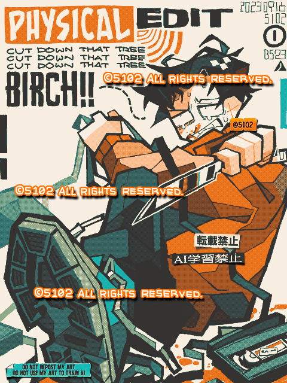

Made with
Tegaki Editor
手書きブログで描いたもの。
彼は私が高校時代に作ったOCのダリルです。
日本は残暑でクソ暑いというのに、冬服のキャラを描くのは見てるだけで暑苦しくて多少不快だ。
しばらくの間、手書きブログ用のサブPCとして、富士通の「Arrows Tab Q584」という教育機関向けタブレットPCを使っていたのですが、つい最近タッチ操作を一切受け付けなくなり(解決済み)、とうとう線1本を引くのにも凄まじいタイムラグが発生するようになった。こうなってはもうダメっぽくてショックだ。
もともとスペックが低すぎる端末なので仕方ない。安いタブレットに簡単に手を出すとよくないね。残念。
2023/09/16
 ダリル（OC）
ダリル（OC）